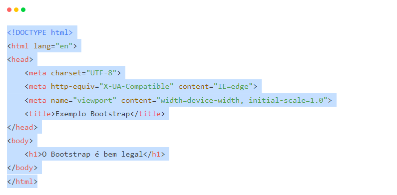

O que é BootStrap?

Bootstrap é um framework front-end que fornece estruturas de CSS para a criação de sites e aplicações responsivas de forma rápida e simples. Além disso, pode lidar com sites de desktop e páginas de dispositivos móveis da mesma forma. Originalmente, o Bootstrap foi desenvolvido para o Twitter por um grupo de desenvolvedores liderados por Mark Otto e Jacob Thornton Logo e se tornou uma das estruturas de front-end e projetos de código aberto mais populares do mundo. Antes de ser uma estrutura de código-fonte aberto, o Bootstrap era conhecido como Twitter Blueprint. Após alguns meses de desenvolvimento, o Twitter realizou sua primeira Hack Week: o projeto ganhou uma grande popularidade quando desenvolvedores de todos os níveis de habilidade usaram o framework sem qualquer orientação externa. Após o evento, ele serviu como guia de estilo para o desenvolvimento de ferramentas internas na empresa por mais de um ano antes de seu lançamento se tornar público.
Como o Bootstrap é distribuído?
Como o Bootstrap é distribuído? Geralmente, o Bootstrap é distribuído usando o site oficial e npm. Você também pode criar sua própria distribuição usando o código-fonte, ou por meio da própria rede de distribuição de conteúdo conhecida como CDN do Bootstrap. Um CDN permite que um site da web recupere com frequência arquivos públicos usados de servidores distribuídos globalmente.
Como instalar o Bootstrap?
Na página de download oficial você encontra com detalhes todas as formas de instalar o Bootstrap. Nós vamos aprender a instalá-lo via CDN. Para alcançar o mesmo resultado deste artigo na sua instalação, crie uma pasta e um arquivo chamado index.html. No arquivo, inclua o seguinte código:
